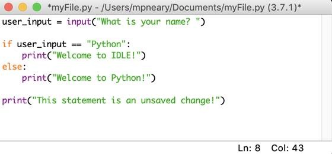

Установка PYTHON
Для загрузки дистрибутива заходим на страницу http:www.python.org/downloads/ и в списке доступных версий щелкаем по гиперссылке Python 3.6.3. Находим раздел Files и щелкаем по гиперссылке Windows x86 executable installer (32-разрядная редакция интерпретатора) или Windows x86-64 executable installer (64-разрядная редакция интерпретатора) – в зависимости от версии вашей ОС. В результате на ваш компьютер будет загружен файл python-3.6.3.exe или python-3.6.3-amd64.exe. Запускаем загруженный файл.
В открывшемся окне проверяем установлен ли флажок Install launcher for all users (recommended) (Установить исполняющую среду для всех пользователей), устанавливаем флажок Add Python 3.6 to PATH (добавить Python 3.6 в список путей переменной PATH) и нажимаем кнопку Customize Installation (Настроить установку).
В следующем диалоговом окне нам предлагают выбрать устанавливаемые компоненты. Оставляем установленными все флажки, представляющие эти компоненты, и нажимаем кнопку Next.
На следующем шаге зададим некоторые дополнительные настройки и выберем путь установки. Проверим, установлены ли флажки Associate files with Python (requires the py launcher) (Ассоциировать файлы с Python). Create shortcuts for installed applications (Создать ярлыки для установленных приложений). Add Python to environment variables (Добавить Python в переменные окружения) и Precompile standard library (Предварительно откомпилировать стандартную библиотеку), и установим флажок Install for all users (Установить для всех пользователей).
Теперь уточним путь по которому будет установлен Python. Изначально предлагается установить интерпретатор по пути c:\Programm Files\Python36. Если оставить этот путь, то при установке дюбой дополнительной библиотеки понадобиться запускать командную строку с правами администратора, иначе библиотека не установится.
Рекомендуется установить Python по пути c:\Python36, т.е. непосредственно в корень диска, тогда не будет проблем с установкой дополнительных библиотек.
Задав все необходимые параметры, нажимаем Install и положительно отвечаем на появившееся на экране предупреждение UAC.
После завершения установки откроется окно Setup was succesfull, нажимаем Close для выхода.
В папке c:\Python36 вы найдете два исполняемых файла: python.exe и pythonw.exe. Файл python.exe предназначен для выполнения консольных приложений. Именно эта программа запускается при двойном щелчке на файле *.py. Файл pythonw.exe служит для запуска оконных приложений (для файлов с расширением *.pyw).
Символы >>> означают приглашение для ввода инструкций на языке Python.
Для начала работы с языком удобно использовать редактор IDLE, который входит в состав установленных компонентов.
Для его запуска в меню Пуск|Программы (Все программы) Python 3.6 выбираем пункт IDLE (Python 3.6 32-bit) или (Python 3.6 64-bit). В результате откроется окно (Python Shell), которое выполняет все функции интерактивной оболочки, дополнительно производит подсветку синтаксиса, выводит подсказки и др.
Как использовать оболочку Python IDLE
Оболочка является режимом работы по умолчанию для Python IDLE.
Когда вы нажимаете на значок, чтобы открыть программу, оболочка - это первое, что вы видите:
Это пустое окно интерпретатора Python. Вы можете использовать его, чтобы сразу начать взаимодействовать с Python. Вы можете проверить это с помощью короткой строки кода:
Здесь вы использовали print () , чтобы вывести строку " Hello, from IDLE! " на экран. Это самый простой способ взаимодействия с Python IDLE. Вы вводите команды по одной за раз, и Python отвечает результатом каждой команды.
Далее взгляните на строку меню. Вы увидите несколько вариантов использования оболочки:
Вы можете перезапустить оболочку из этого меню (Restart). Если вы выберете эту опцию, вы очистите состояние оболочки. Он будет действовать так, как будто вы запустили новый экземпляр Python IDLE. Оболочка забудет обо всем из своего предыдущего состояния:
На изображении выше вы сначала объявляете переменную x = 5 . Когда вы вызываете print (x) , оболочка показывает правильный вывод, который является числом 5. Однако, когда вы перезапустите оболочку и попытаетесь снова вызвать print (x), вы увидите, что оболочка печатает traceback. Это сообщение об ошибке, в котором говорится, что переменная x не определена. Оболочка забыла обо всем, что было до перезапуска.
Вы также можете прервать выполнение оболочки из этого меню. Это остановит любую программу или оператор, выполняющийся в оболочке во время прерывания. Посмотрите, что происходит, когда вы отправляете прерывание клавиатуры в оболочку:
Сообщение об ошибке KeyboardInterrupt отображается красным текстом в нижней части окна. Программа получила прерывание и прекратила выполнение.
Python IDLE предлагает полноценный редактор файлов, который дает вам возможность писать и выполнять программы Python изнутри этой программы. Встроенный редактор файлов также включает в себя несколько функций, таких как завершение кода и автоматическое отступление, которые ускорят ваш рабочий процесс кодирования. Во-первых, давайте посмотрим, как писать и выполнять программы в Python IDLE.
Чтобы запустить новый файл Python, выберите File → New File в строке меню. Это откроет пустой файл в редакторе, например так:
Из этого окна вы можете написать новый файл Python. Вы также можете открыть существующий файл Python, выбрав _File → Open… _ в строке меню. Это откроет браузер файлов вашей операционной системы. Затем вы можете найти файл Python, который хотите открыть.
Если вы заинтересованы в чтении исходного кода для модуля Python, вы можете выбрать File → Path Browser. Это позволит вам просматривать модули, которые может видеть Python IDLE. Если дважды щелкнуть один из них, откроется редактор файлов, и вы сможете его прочитать.
Содержимое этого окна будет таким же, как пути, возвращаемые при вызове sys.path. Если вы знаете имя определенного модуля, который хотите просмотреть, вы можете выбрать File → Module Browser и ввести имя модуля в появившемся окне.
После того, как вы открыли файл в Python IDLE, вы можете внести в него изменения. Когда вы будете готовы отредактировать файл, вы увидите что-то вроде этого:
Содержимое вашего файла отображается в открытом окне. Панель в верхней части окна содержит три важных элемента:
1. Имя файла, который вы редактируете
2. Полный путь к папке, где вы можете найти этот файл на вашем компьютере
3. Версия Python, которую использует IDLE
На изображении выше вы редактируете файл myFile.py, который находится в папке Documents. Версия Python 3.7.1, которую вы можете увидеть в скобках.
В правом нижнем углу окна также есть две цифры:
1. Ln: показывает номер строки, на которой находится ваш курсор.
2. Col: показывает номер столбца, на котором находится ваш курсор.
Полезно видеть эти цифры, чтобы быстрее находить ошибки. Они также помогают вам убедиться, что вы находитесь в пределах определенной ширины линии.
В этом окне есть несколько визуальных подсказок, которые помогут вам не забыть сохранить свою работу. Если вы посмотрите внимательно, то увидите, что Python IDLE использует звездочки, чтобы сообщить вам, что в вашем файле есть несохраненные изменения:

Имя файла, отображаемое в верхней части окна IDLE, окружено звездочками. Это означает, что в вашем редакторе есть несохраненные изменения. Вы можете сохранить эти изменения с помощью стандартного сочетания клавиш вашей системы или выбрать Файл → Сохранить в строке меню. Убедитесь, что вы сохранили свой файл с расширением .py, чтобы подсветка синтаксиса была включена.
Если вы хотите выполнить файл, который вы создали в IDLE, вы должны сначала убедиться, что он сохранен. Помните, что вы можете увидеть, правильно ли сохранен ваш файл, посмотрев звездочки вокруг имени файла в верхней части окна редактора файлов. Python IDLE будет напоминать вам о необходимости сохранения всякий раз, когда вы пытаетесь выполнить несохраненный файл.
Чтобы выполнить файл в режиме IDLE, просто нажмите клавишу F5 на клавиатуре. Вы также можете выбрать Run → Run Module в строке меню. Любой из вариантов перезапустит интерпретатор Python, а затем запустит код, который вы написали, с новым интерпретатором. Процесс такой же, как когда вы запускаете python3 -i [имя файла] в вашем терминале.
Когда ваш код будет выполнен, интерпретатор будет знать все о вашем коде, включая любые глобальные переменные, функции и классы. Это делает Python IDLE отличным местом для проверки ваших данных, если что-то пойдет не так. Если вам понадобится прервать выполнение вашей программы, можете нажать [.keys] # Ctrl + C # в интерпретаторе, который выполняет ваш код.
Редактор Python IDLE предлагает несколько функций, которые вы увидите в большинстве профессиональных IDE, чтобы помочь вам быстрее кодировать. Эти функции включают в себя автоматическое отступление, завершение кода и советы по вызову, а также контекст кода.
IDLE автоматически сделает отступ для вашего кода, когда ему нужно начать новый блок. Обычно это происходит после ввода двоеточия (:). Когда вы нажимаете клавишу ввода после двоеточия, курсор автоматически перемещается на определенное количество пробелов и начинает новый блок кода.
Вы можете настроить, сколько пробелов будет перемещать курсор в настройках, но по умолчанию используются стандартные четыре пробела. Разработчики Python согласовали стандартный стиль, который был формализован и теперь известен как PEP 8 .
Когда вы пишете код для большого проекта или сложной проблемы, вы можете потратить много времени, просто набирая весь необходимый код. Завершение кода помогает вам сэкономить время, пытаясь завершить код для вас. Python IDLE имеет базовую функциональность завершения кода. Это может только автозаполнение имен функций и классов. Чтобы использовать автозаполнение в редакторе, просто нажмите клавишу табуляции после последовательности текста.
Python IDLE также предоставит советы по звонкам. Подсказка вызова - это подсказка для определенной части вашего кода, которая поможет вам вспомнить, что нужно этому элементу. После того, как вы введете левую скобку, чтобы начать вызов функции, появится подсказка о вызове, если вы ничего не наберете в течение нескольких секунд. Например, если вы не совсем помните, как добавить к list, вы можете сделать паузу после открывающей скобки, чтобы вызвать подсказку вызова:
Подсказка о вызове будет отображаться как всплывающая заметка, напоминающая вам, как добавить информацию в список.
Функциональность code context - это удобная функция редактора файлов Python IDLE. Он покажет вам область действия функции, класса, цикла или другой конструкции. Это особенно полезно, когда вы просматриваете длинный файл и вам нужно отслеживать, где вы находитесь, просматривая код в редакторе.
Чтобы включить его, выберите Options → Code Context в строке меню. Вы увидите серую полосу в верхней части окна редактора:
Когда вы прокручиваете свой код вниз, context , содержащий каждую строку кода, будет оставаться внутри этой серой полосы. Это означает, что функции print (), которые вы видите на изображении выше, являются частью функции main. Когда вы достигнете линии, выходящей за рамки этой функции, панель исчезнет.
*Ошибка* - неожиданная проблема в вашей программе. Они могут появляться во многих формах, и некоторые из них без помощи отладчика исправить сложно.
Если вы хотите запустить свой код с помощью встроенного отладчика, то вам нужно включить эту функцию. Для этого выберите Debug → Debugger в строке меню Python IDLE. В интерпретаторе вы должны увидеть [DEBUG ON] перед запросом ( >>>), что означает, что интерпретатор готов и ожидает.
Когда вы запустите ваш файл Python, появится окно отладчика:
В этом окне вы можете проверить значения ваших локальных и глобальных переменных при выполнении кода. Это дает вам представление о том, как ваши данные обрабатываются во время выполнения кода.
Вы также можете нажать следующие кнопки для перемещения по коду:
● Go: Нажмите эту кнопку, чтобы перейти к следующей точке останова breakpoint. Вы узнаете об этом в следующем разделе.
● Шаг: Нажмите, чтобы выполнить текущую строку и перейти к следующей.
● Over: Если текущая строка кода содержит вызов функции, нажмите эту кнопку, чтобы перейти на эту функцию. Другими словами, выполните эту функцию и перейдите к следующей строке, но не делайте паузу во время выполнения функции (если не существует точки останова).
● Out: Если текущая строка кода находится в функции, нажмите эту кнопку, чтобы перейти к шагу out этой функции. Другими словами, продолжайте выполнение этой функции, пока не вернетесь к ней.
Будьте осторожны, потому что нет кнопки реверса! Вы можете только сделать шаг вперед во время выполнения вашей программы.
Вы также увидите четыре флажка в окне отладки:
1. Globals: глобальная информация о вашей программе
2. Locals: локальная информация вашей программы во время выполнения
3. Стек: функции, которые запускаются во время выполнения
4. Источник: Ваш файл в редакторе IDLE
Выбрав один из них, вы увидите соответствующую информацию в окне отладки.
*Точка останова* - это строка кода, которую вы определили как место, где интерпретатор должен приостановить выполнение кода. Они будут работать только при включенном режиме _DEBUG_, поэтому убедитесь, что вы сделали это в первую очередь.
Чтобы установить точку останова, щелкните правой кнопкой мыши строку кода, которую вы хотите приостановить. Это выделит строку кода желтым цветом как визуальную индикацию установленной точки останова. Вы можете установить столько точек останова в своем коде, сколько захотите. Чтобы отменить точку останова, снова щелкните правой кнопкой мыши на той же строке и выберите Clear Breakpoint.
После того, как вы установили свои точки останова и включили режим DEBUG, вы можете запустить свой код, как обычно. Откроется окно отладчика, и вы можете начать пошаговое выполнение кода вручную.
Когда вы видите сообщение об ошибке в интерпретаторе, Python IDLE позволяет перейти прямо к файлу или строке, вызвавшей сбой, из строки меню. Все, что вам нужно сделать, это выделить номер строки или имя файла, которые указаны курсором, и выбрать Debug → Перейти к файлу/строке в строке меню. Это откроет файл-нарушитель и приведет вас к строке, содержащей ошибку. Эта функция работает независимо от того, включен ли режим DEBUG.
Существует множество способов придания Python IDLE визуального стиля. Внешний вид по умолчанию основан на цветах в логотипе Python. Если вам что-то нравится, вы можете изменить это.
Для доступа к окну настройки выберите Options → Configure IDLE в строке меню. Чтобы просмотреть результат изменения, нажмите Apply. Когда вы закончите настройку Python IDLE, нажмите OK, чтобы сохранить все ваши изменения. Если вы не хотите сохранять изменения, просто нажмите Cancel.
Существует 5 пунктов в меню Settings Python IDLE, которые вы можете настроить:
1. Fonts/Tabs (Шрифты)
2. Highlights (Особенности)
3. Keys
4. General
5. Extensions
Первая вкладка позволяет изменять такие вещи, как цвет шрифта, размер шрифта и стиль шрифта. Вы можете изменить шрифт практически на любой понравившийся вам стиль, в зависимости от того, что доступно вашей операционной системе. Окно настроек шрифта выглядит так:
Вы можете использовать окно прокрутки, чтобы выбрать, какой шрифт вы предпочитаете. (рекомендуется шрифт фиксированной ширины, например Courier New.) Выберите удобный размер шрифта. Вы также можете установить флажок рядом с Bold, чтобы включить или отключить отображение всего текста жирным шрифтом.
Это окно также позволит вам изменить количество пробелов, используемых для каждого уровня отступа. По умолчанию установлен стандарт - четыре пробела.
Вторая вкладка настройки позволит вам изменить основные моменты. Подсветка синтаксиса - важная особенность любой IDE, которая выделяет синтаксис языка, на котором вы работаете. Это помогает вам визуально различать различные конструкции Python и данные, используемые в вашем коде.
Python IDLE позволяет полностью настроить внешний вид вашего кода Python. Он предустановлен с тремя различными темами подсветки:
1. IDLE Day
2. IDLE Night
3. IDLE Новый
Вы можете выбрать одну из этих предустановленных тем или создать собственную тему прямо в этом окне:
К сожалению, IDLE не позволяет устанавливать пользовательские темы из файла. Вы должны создать нужную тему в этом окне. Выберите элемент, а затем нажмите Выберите цвет для. Вы попадете в палитру цветов, где сможете выбрать именно тот цвет, который хотите использовать.
Затем вам будет предложено сохранить эту тему как новую пользовательскую тему, и вы сможете ввести имя по вашему выбору. Затем вы можете продолжить менять цвета разных предметов, если хотите. Не забудьте нажать Apply, чтобы увидеть ваши изменения в действии!
Третья вкладка настройки позволяет сопоставить различные нажатия клавиш с действиями, также известными как сочетания клавиш . Это жизненно важный компонент производительности, когда вы используете IDE. Вы можете придумать свои собственные сочетания клавиш или использовать те, которые поставляются с IDLE. Предварительно установленные ярлыки - хорошее место для начала:
Сочетания клавиш перечислены в алфавитном порядке по действию. Они перечислены в формате Action - Shortcut, где Action - это то, что произойдет, когда вы нажмете комбинацию клавиш в Shortcut. Если вы хотите использовать встроенный набор ключей, выберите сопоставление, соответствующее вашей операционной системе.
Настройка сочетаний клавиш очень похожа на настройку цветов подсветки синтаксиса. К сожалению, IDLE не позволяет устанавливать пользовательские сочетания клавиш из файла. Вы должны создать собственный набор ярлыков на вкладке Keys.
Выберите одну пару из списка и нажмите Получить новые ключи для выбора. Появится новое окно:
Здесь вы можете использовать флажки и меню прокрутки, чтобы выбрать комбинацию клавиш, которые хотите использовать для этого ярлыка. Вы можете выбрать _Advanced Key Binding Entry >> _, чтобы ввести команду вручную.
Четвертая вкладка окна настройки - это место для небольших общих изменений. Вкладка общих настроек выглядит следующим образом:
Здесь вы можете настроить такие параметры, как размер окна и то, будет ли оболочка или редактор файлов открываться первыми при запуске Python IDLE.
Пятая вкладка окна настройки позволяет добавлять расширения в Python IDLE. Расширения позволяют добавлять новые замечательные функции в редактор и окно интерпретатора. Вы можете скачать их из Интернета и установить прямо в Python IDLE.
Чтобы посмотреть, какие расширения установлены, выберите Options → Configure IDLE → Extensions. В Интернете доступно множество extensions. Найдите те, которые вам нравятся, и добавьте их в Python IDLE!